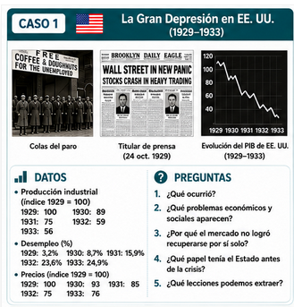
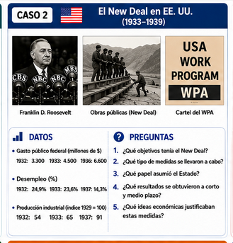
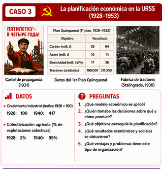
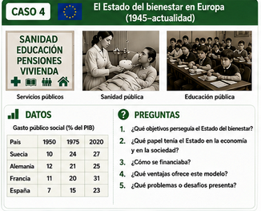
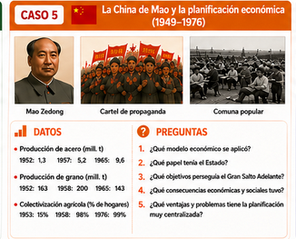
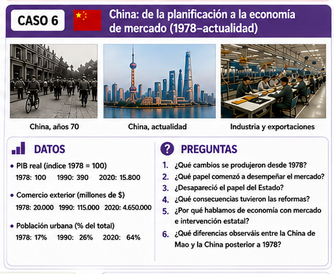

HISTORIAS ECONÓMICAS
| A partir del material histórico proporcionado por el Departamento de Historia, cada grupo analizará un estudio de caso relacionado con una situación económica concreta. El objetivo es comprender cómo se organizaron las decisiones económicas en diferentes momentos históricos y qué papel desempeñaron el mercado y el Estado. |
¿Qué tenéis que hacer?
| Analizad las fuentes, imágenes y datos incluidos en vuestro caso. Responded de forma razonada a las preguntas propuestas, relacionando la información histórica con los conceptos económicos trabajados en la unidad. Ampliad la información mediante una búsqueda en Internet, utilizando fuentes fiables . Extraed las ideas principales y preparad una breve presentación de 3-4 minutos para explicar vuestro caso al resto de la clase. |
Pregunta guía
| ¿Cómo respondieron diferentes sociedades a los problemas económicos de su época y qué papel asumió el Estado en cada caso? |
Al finalizar las exposiciones, seremos capaces de comparar los diferentes casos y explicar qué mecanismos de organización económica y qué formas de intervención pública aparecen en cada uno, valorando sus principales consecuencias para la economía y para la sociedad (anotando una breve reflexión en el portfolio).
CASO 1

CASO 2

CASO 3

CASO 4

CASO 5

CASO 6
